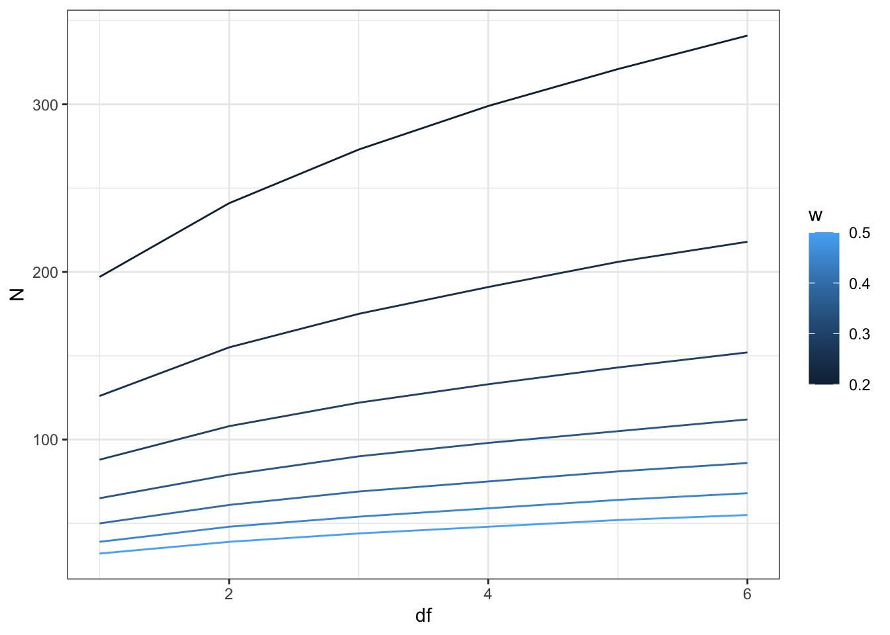

library(pwr)
# Define the parameters
power <- 0.80 # Desired power level
effectw <- 0.3 # Medium effect size Cohen w
alpha <- 0.05 # Significance level
df <- 2 # Degrees of freedom for a 3x2 table, i.e (3-1)(2-1)=225 Power analysis - contingency table
While designing a research including an experiment, you regularly find yourself in the need to balance your own time or personal resource with the number of factors for which you can test an interaction. This regularly boils down to minimizing the number of participants (especially when your guinea pigs are your fellow students) in your experience while ensuring you can still identify an effect, an interdependence between your factors if any. This search is generally called a power analysis. It is essentially reversing the previous approach where you identify the probability of rejecting the null hypothesis given a certain number of observations. Here you fix the rejection probability in order to find a minimum number of observations.
We demonstrate a power analysis in the case of a chi-squared test of independence but similar power test exist for the other tests we have seen earlier. We will use the pwr R package for this analysis.
25.1 Example
We have two categorical variables, A and B, with the following marginal proportions: - Variable A: 3 categories (A1, A2, A3), e.g. “rural”, “urban”, “suburban”) - Variable B: 2 categories (B1, B2), e.g. “not vegeterian”, “vegetarian”
In the population we know that freqeuncies are not homogeneously distributed across the categories. Suppose the following marginal proportions. They are typically known form a census of residential places and a nation-wide study of vegetarianism:
- \(P(A1) = 0.3\)
- \(P(A2) = 0.4\)
- \(P(A3) = 0.3\)
- \(P(B1) = 0.8\)
- \(P(B2) = 0.2\)
Our goal is to find the minmum total sample size \(N\) needed for a link between A and B, i.e. urbanity and vegetarianism to be detected. From \(N\) and the proportions of the A variable (rural, urban or suburban people), we can then invite a relevant number of participants based on their residential place.
25.2 Power analysis elements
The power analysis will determine the sample size required to detect an effect of a given size with a given degree of confidence. It requires you to define three parameters, one of which i salpha which we know already well:
Power ((1-)): the probability that the test will correctly reject the null hypothesis when the alternative hypothesis is true (see type of errors). A power of 0.80 is commonly used, meaning there is an 80% chance of detecting a true effect.
Significance Level (()): the probability of rejecting the null hypothesis when it is actually true (Type I error). Again we can use the typical value of 0.05.
Effect Size: this is a measure of the magnitude of the phenomenon we want to be able to identify. In chi-square tests, Cohen’s \(w\) is often used to quantify this effect size. Cohen’s \(w\) is easily calculated from the chi-squared statistics applied to the contingency table. It is defined as
\[w = \sqrt{\frac{\chi^2}{N}}\]
where \(\chi^2\) is the chi-square statistic and \(N\) is the total sample size.
A standard approach is to fix Cohen’s \(w=0.3\), which is said to be a medium effect. We then see that if \(w\) is fixed we obtain \(N\) from the \(\chi^2\):
\[N = \sqrt{\frac{\chi^2}{w}}\] ## Implementation
First we load the power analysis package pwr and define our parameters:
Second, we compute the power based on the chi-squared test:
pwr.chisq.test(w = effectw, df = df, sig.level = alpha, power = power)
#>
#> Chi squared power calculation
#>
#> w = 0.3
#> N = 107.0521
#> df = 2
#> sig.level = 0.05
#> power = 0.8
#>
#> NOTE: N is the number of observationsThe output indicates the total sample size required to achieve the desired power and effect size.
The above doesn’t make use of the observed margins proportions which we use simply now to allocate the total sample size according to the proportions for each category of variable A, that is a stratified sampling:
pwrresult<-pwr.chisq.test(w = effectw, df = df, sig.level = alpha, power = power)
ceiling(pwrresult$N*c(A1=0.3,A2=0.4,A3=0.3))
#> A1 A2 A3
#> 33 43 3325.3 Effect size and degrees of freedom
With alpha being set at 0.05 and the pover level 1-beta set to 0.80, we can cross-tabulate the effect size \(w\) against the degrees of freedom to get an idea of the effect of being more or less demanding and the effect of aggregating/subdividing categories:
dfs<-1:6
ws<-seq(0.2,0.5, by=0.05)
D<-data.frame(df=rep(dfs, each=length(ws)),w=rep(ws,length(dfs)))
D$N<-apply(D, 1, function(x){
pwrresult<-pwr.chisq.test(w = x[2], df = x[1],
sig.level = 0.05, power = 0.8)
ceiling(pwrresult$N)
})
D
#> df w N
#> 1 1 0.20 197
#> 2 1 0.25 126
#> 3 1 0.30 88
#> 4 1 0.35 65
#> 5 1 0.40 50
#> 6 1 0.45 39
#> 7 1 0.50 32
#> 8 2 0.20 241
#> 9 2 0.25 155
#> 10 2 0.30 108
#> 11 2 0.35 79
#> 12 2 0.40 61
#> 13 2 0.45 48
#> 14 2 0.50 39
#> 15 3 0.20 273
#> 16 3 0.25 175
#> 17 3 0.30 122
#> 18 3 0.35 90
#> 19 3 0.40 69
#> 20 3 0.45 54
#> 21 3 0.50 44
#> 22 4 0.20 299
#> 23 4 0.25 191
#> 24 4 0.30 133
#> 25 4 0.35 98
#> 26 4 0.40 75
#> 27 4 0.45 59
#> 28 4 0.50 48
#> 29 5 0.20 321
#> 30 5 0.25 206
#> 31 5 0.30 143
#> 32 5 0.35 105
#> 33 5 0.40 81
#> 34 5 0.45 64
#> 35 5 0.50 52
#> 36 6 0.20 341
#> 37 6 0.25 218
#> 38 6 0.30 152
#> 39 6 0.35 112
#> 40 6 0.40 86
#> 41 6 0.45 68
#> 42 6 0.50 55Graphically:
library(ggplot2)
library(scales)
ggplot(data=D)+
geom_line(aes(x=df,y=N, group=factor(w), col=w))+
theme_bw()
Or a two entries table to find N
reshape2::dcast(D, df ~ w, value.var="N")
#> df 0.2 0.25 0.3 0.35 0.4 0.45 0.5
#> 1 1 197 126 88 65 50 39 32
#> 2 2 241 155 108 79 61 48 39
#> 3 3 273 175 122 90 69 54 44
#> 4 4 299 191 133 98 75 59 48
#> 5 5 321 206 143 105 81 64 52
#> 6 6 341 218 152 112 86 68 55